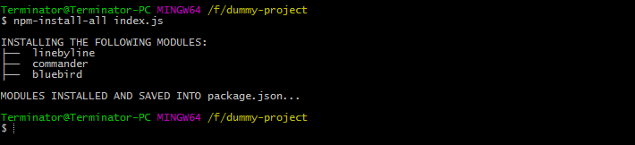
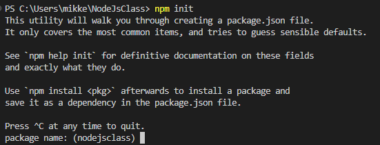

What is Node?
Node is an open-source, cross-platform, server-side Javascript runtime enviroment.
One of it's main features is the ability to use Javascript on the server-side (Backend!).
This allows for us developers to write the same language both frontend and backend, which can save time and can generally just be easier.
Node also has a built in package manager called npm (Node Package Manager), which makes it easy to install and manage third party packages and modules!
Node.js is a service-site-enviroment that allows you to run Javascript on your computer, outside the browser.
How to Node!
Node commands are run in the terminal. We've used the terminal provided by our editor for coding so far.
Theres a few different commands, but most will start with either "node" or "npm".
The main ones we've used have been:
"npm install `package-name`" which installs a package. Can be shortened to "i" for install. Also can add "-g" to install globally instead of just inside current folder.

"npm init" which initializes a new Node.js project and creating a corresponding `package.json` file

"npm start" to start our application.
"node run `script-file`" which will start a custom script defined in our package.json file.